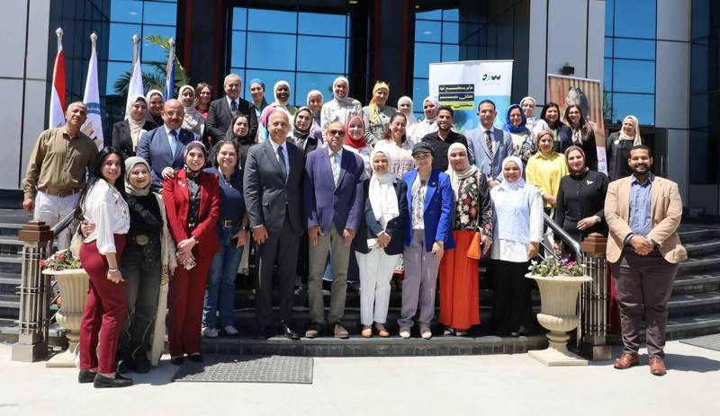
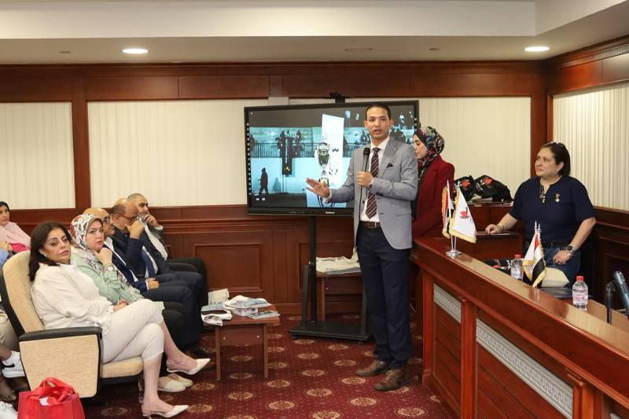
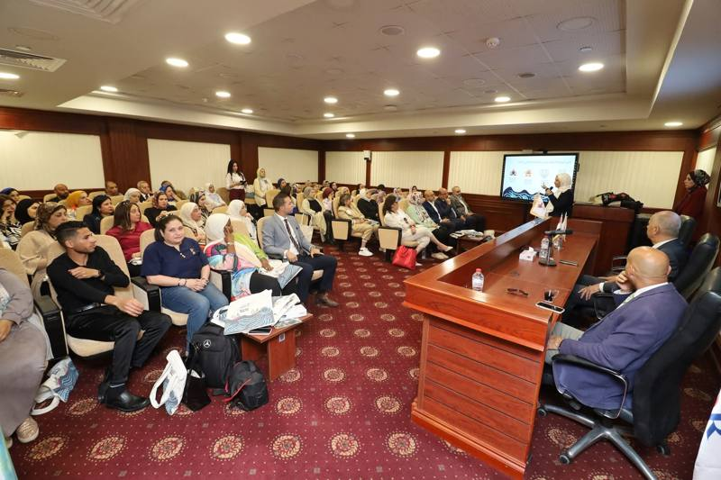
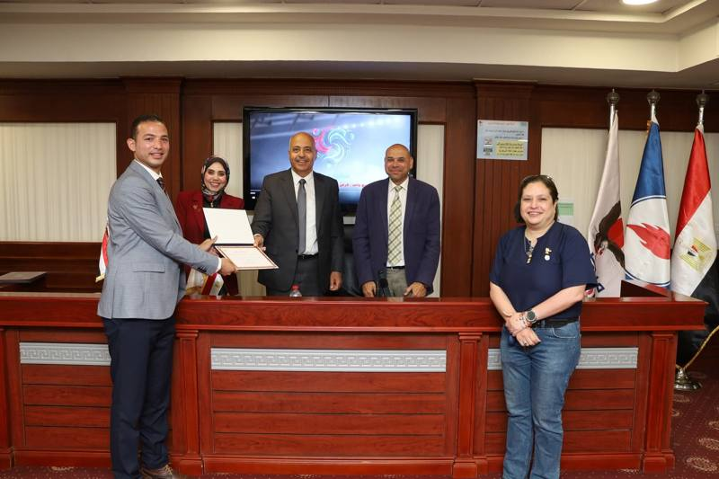
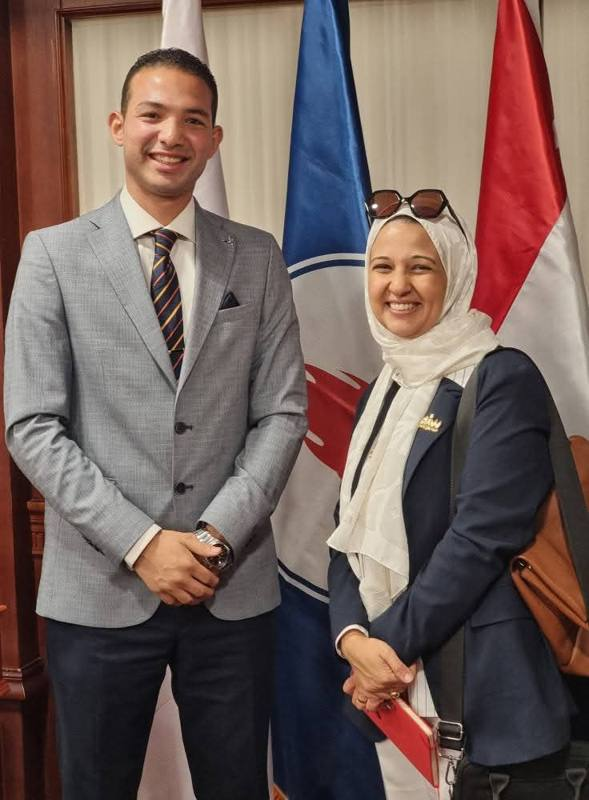
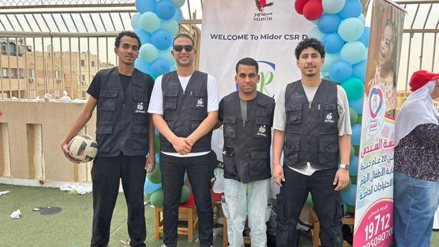
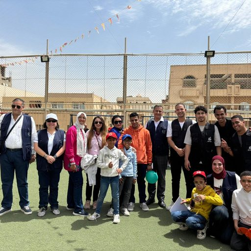

نقل الخبرات والدمج المجتمعي: برنامج لتأهيل شباب دور الرعاية لمرحلة الاستقلال، يقوده خريجو الدور أنفسهم، ونبحث فيه عن شركاء من الشركات وإدارات المسؤولية المجتمعية.
تقدم المبادرة برنامجاً تأهيلياً مهنياً وحياتياً ونفسياً ورياضياً للشباب قبل خروجهم للمجتمع، يعتمد على المعايشة المباشرة مع النماذج الناجحة من خريجي الدور، وتحت إشراف مختصين.
إحنا منكم، نقل الخبرات والدمج المجتمعي.
جمعية بصمة نور لجسور التنمية.
شباب وفتيات دور الأيتام من 14 إلى 18 سنة، للتهيئة لمرحلة الاستقلال.
برنامج تأهيلي مهني وحياتي ونفسي ورياضي قبل الخروج للمجتمع.
من شهر إلى شهر ونصف، بالتعاون مع إحدى الشركات المتخصصة الشريكة لبصمة نور. تدريب مجموعة منتقاة من النماذج الناجحة من خريجي دور الأيتام على مهارات القيادة المجتمعية وفن التواصل والأسس النفسية السليمة ومهارات الحكي، ليصبحوا قادة المبادرة وينقلوا تجاربهم للأطفال بشكل احترافي ومدروس.
نزول فرق العمل، وهم القادة الخريجون ومختصو بصمة نور، إلى دور الأيتام لتطبيق برنامج إحنا منكم التأهيلي الشامل على الشباب من 14 إلى 18 سنة.
يوم الافتتاح هو التدشين الرسمي للمبادرة، وتخريج للمرحلة الأولى، وتنفيذ أول تجربة أولية للمرحلة الثانية.
إعلان انطلاق المبادرة رسمياً، وتخريج الدفعة الأولى وتكريم النماذج الناجحة التي اجتازت البرنامج التدريبي، وتسليمهم مهامهم كقادة ميدانيين.
استضافة أطفال وشباب من أكثر من دار أيتام، وبدء القادة في تطبيق البرنامج عملياً لأول مرة عبر دوائر الحكي والمحطات التفاعلية، مع تواجد أخصائيي وكشافي بصمة نور لإجراء مسح أولي نفسي وسلوكي ورياضي.
دوائر حكي يديرها قادة المبادرة لنقل تجاربهم الحقيقية في مواجهة المجتمع مع فتح باب الأسئلة، ونقل الخبرة في إدارة الأموال والترشيد وفهم عقود الإيجار وتأمين السكن الآمن وبناء علاقات اجتماعية سوية.
ورش عمل مبسطة لتحديد المسار التعليمي أو الحرفي، وتدريب عملي على كتابة السيرة الذاتية واجتياز المقابلات الشخصية بثقة، والتعامل داخل بيئة العمل.
أخصائيون نفسيون من بصمة نور يرصدون المشكلات السلوكية مثل الخوف من المستقبل والعدوانية والرهاب الاجتماعي، وجلسات توعية جماعية، وإحالة الحالات الفردية لبرامج تعديل السلوك.
أنشطة رياضية لكسر الحواجز النفسية، واكتشاف المواهب على يد الكشافين والمدربين، ودمجها في الكيانات والفرق الرياضية التابعة لبصمة نور لرعايتها وفتح مسار احترافي لها.
ربط كل شاب في الدار بأحد النماذج الناجحة، بمرافقة لايف كوتش، ليكون مسؤولاً عنه هاتفياً وميدانياً لتقديم الدعم وحل المشكلات الحياتية بشكل مستمر.
التزام الجمعية باستمرار رعاية الحالات السلوكية والنفسية والمواهب الرياضية حتى بعد انتهاء فترة البرنامج في الدار.
تقارير دورية توضح نسب التطور في وعي الشباب ونجاح عمليات الدمج.
شاركنا في يوم توعوي وورشة آداب زيارة دور الأيتام لموظفي شركة ميدور للبترول، وفي اليوم التطوعي الذي نظمته الشركة بدار السندس للأيتام.







نبحث عن شركاء يؤمنون بأن الاستثمار في شاب خارج من دار رعاية هو استثمار في مجتمع كامل. المبادرة تحتاج إلى:
تنسيق نزول الدور وتوفير وسائل الانتقال إلى المحافظات.
بدلات الأخصائيين والمختصين الذين يرافقون الزيارات الميدانية.
رعاية البرنامج أو أحد محاوره: الحياتي أو المهني أو النفسي أو الرياضي.
ما أنجزناه قبل التأسيس الرسمي وبعده، وهو بعض ما حققناه على سبيل المثال لا الحصر.
نفذنا بطولة جسور الرمضانية لخريجي دور الرعاية، ونقود وفد مصر إلى كأس العالم للأيتام في بولندا 2027، ونلنا جائزة الشارقة للاتصال الحكومي 2026 عن فئة أفضل مبادرة شبابية في الاتصال.
للتعاون أو دعم المبادرة، تواصل معنا على basmatnour.org@gmail.com